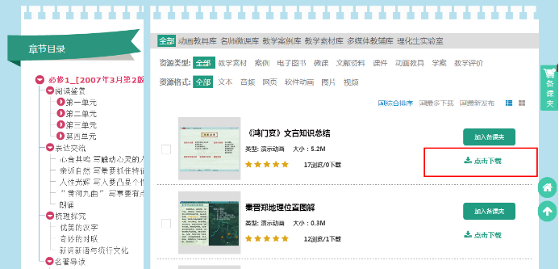
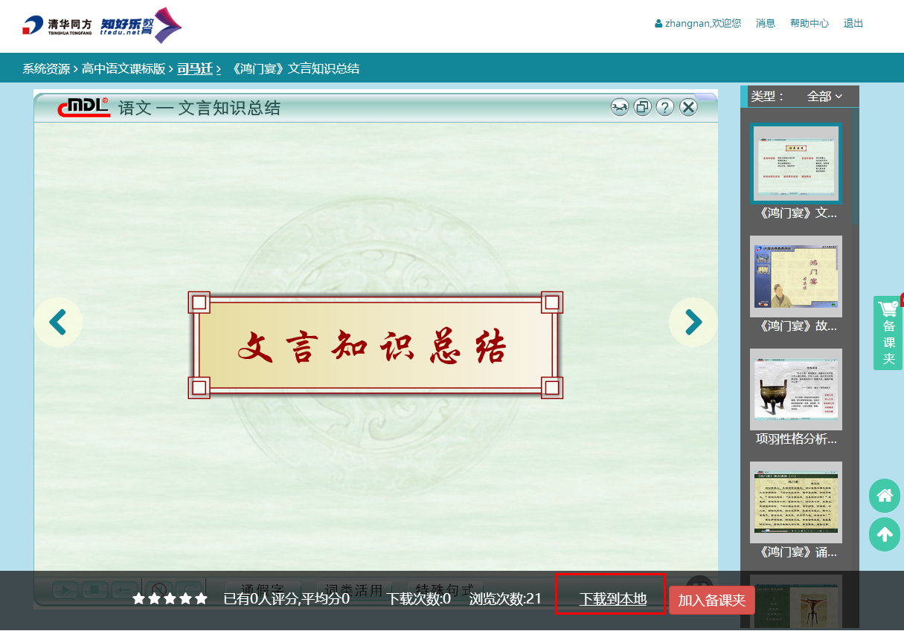
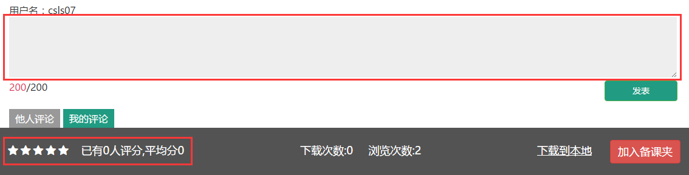
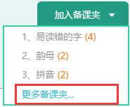
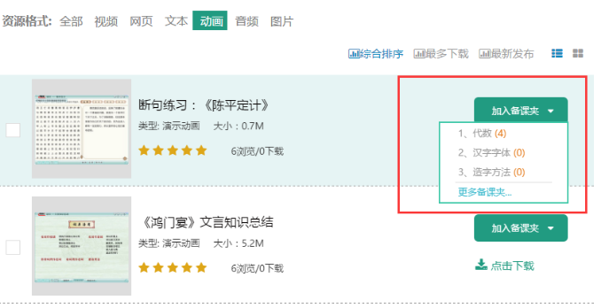
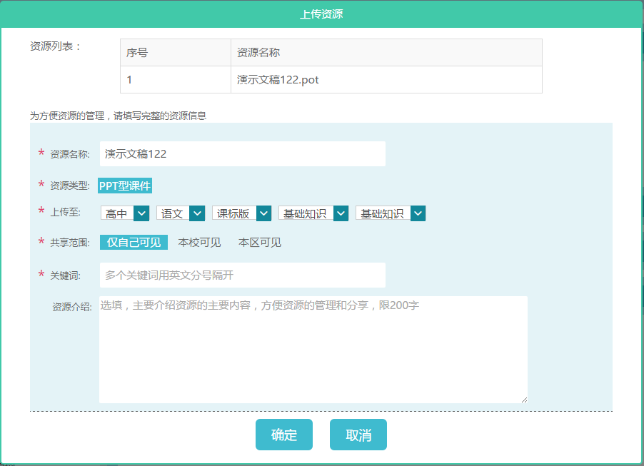
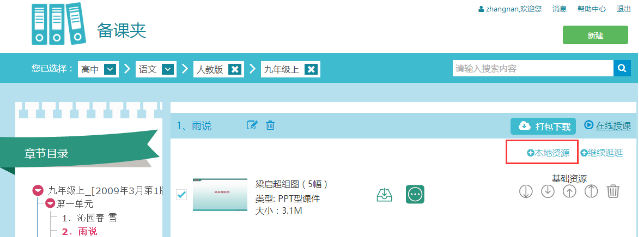
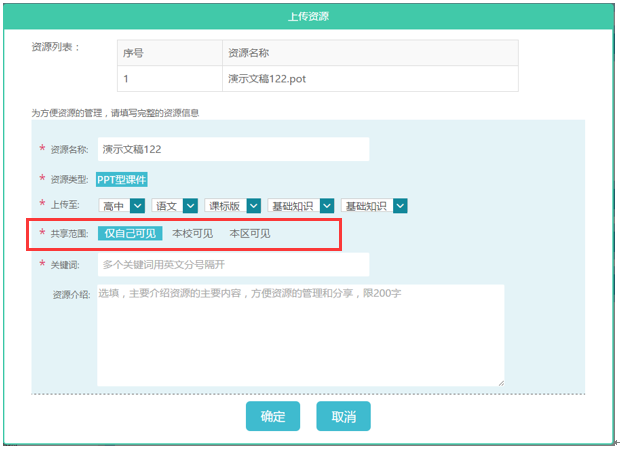

- 使用帮助
- 客户服务
-
1.如何迅速查找需要的资源
方式1：在各个资源库中，通过教材目录、资源类型、资源格式筛选；
方式2：跨库检索，通过资源列表上方的搜索工具，输入关键字后，可以在我的资源、基础资源、共享资源、校本资源、区本资源中实现跨库检索。

-
2.找到资源后，如何下载资源
搜索到合适的资源时，您可以下载资源到本地使用：
方式1：选中需要下载的资源后，点击点击下载按钮，按提示逐步完成操作即可；
方式2：在所需资源预览页面，点击下载到本地按钮，按提示完成下载。
 -
3.如何为资源打分、评价
评分：在资源浏览页面，点击星星，即可为当前资源打分，最高为5分。
评论：在输入框中输入评论内容后，点击右下角的“发表”，即可完成对该资源的评论。
 -
4.如何新建备课夹
方式一：浏览资源时自动新建备课夹。
点击加入备课夹按钮。如果该节点下无备课夹，则自动新建并加入备课夹，备课夹名称默认为当前节点名称。
方式二：浏览资源时手动新建备课夹
点击右侧下拉按钮加入备课夹，下拉单中可选择最近使用的三个备课夹，点击“更多备课夹…”，从弹出的备课夹选择窗口中进行新建。
方式三：在备课夹页点击按钮新建备课夹
进入备课夹页面，点击右上角新建备课夹按钮，按照提示进行新建。
-
5.如何将资源加入备课夹
方式一：在检索页直接将资源加入备课夹
步骤1：检索资源，对合适的资源，点击加入备课夹按钮。即可自动新建并加入到以节点为名称的备课夹中。
步骤2：点击右侧下拉按钮，下拉单中可选择最近使用的三个备课夹，点击“更多备课夹…”，弹出选择框，按照节点，精确选择备课夹。
方式二：在预览页将资源加入备课夹
步骤1：点开一条资源预览，预览页下方点击加入备课夹按钮。
步骤2：从最近备课夹的菜单，选择目录，加入指定备课夹。
方法三：备课夹中，上传本地资源
可在备课夹中，点击本地资源按钮，按照提示上传自己本地的资源
-
6.如何上传本地资源
方式一：在“个人中心”页面，可以上传添加本地资源。
步骤1：点击上传资源按钮，按照提示即可选择本地文件。
步骤2：设置资源属性。上传完成后，在“资源属性设置”页面中完成属性设置即可，其中有“*”标识的属性为必填项。
方式二：在“备课夹”页面，添加本地资源。
也可以在备课夹中，点击本地资源按钮，上传本地的资源及信息的编辑。
 -
7.如何添加网络资源
同添加本地资源一样，点击上传按钮或添加本地资源按钮，选择添加网络资源，按照提示完成网络资源的上传，上传完成后以网页形式保存。
-
8.如何查看和管理“个人资源“
在“个人中心”页面内，您可以查看自己在平台上备课的统计，还可以查看和管理“个人资源”。
（1）查看“个人资源”
可以查看自己在平台上引用、上传、下载、浏览、评价的资源。支持按照类型筛选和预览。
（2）管理“个人资源”
对自己上传的资源，用户可以进行编辑。
-
9.怎么让其他老师看到我的资源
在上传一条资源时，可以将共享范围的设置为“本校可见”/“本区可见”，其他用户就可以在校/区本资源中查看和使用该资源了。
在线客服： 客户服务01 QQ：924305138
在线客服： 客户服务03 QQ：1335547592
在线客服：（服务时间：周一至周五8：30-17：30）
咨询电话：400-699-8396
电子邮箱：kefu@tfedu.net
地址：北京市海淀区王庄路1号清华同方科技广场A座17层
邮编：100084